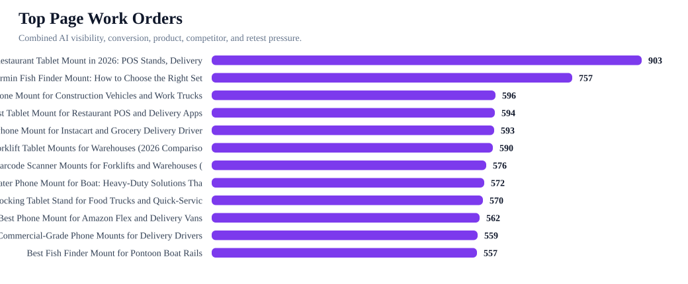
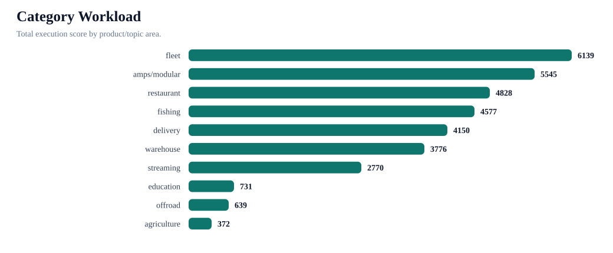
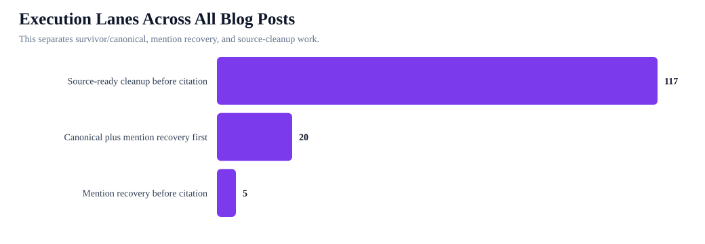
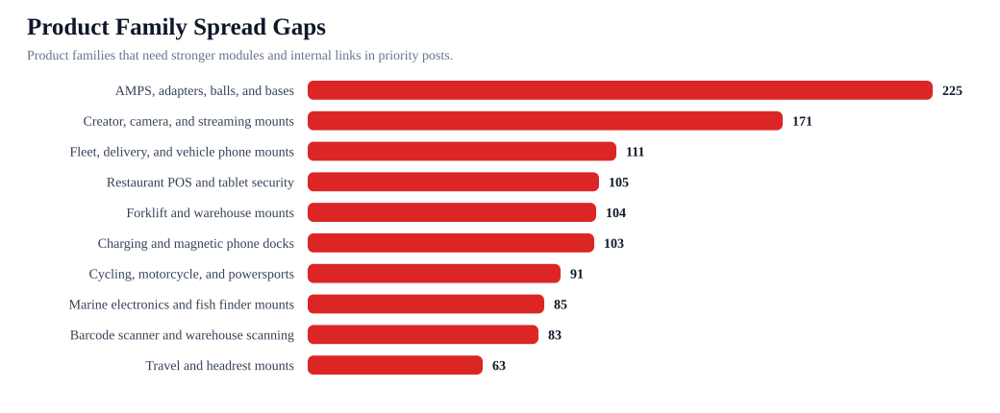

iBOLT AI Page Execution Control Board
Use this as the edit queue. It joins AI visibility, competitor replacement, page quality, product modules, conversion opportunities, and retest prompts into a single workflow. The operating rule is still: survivor URL first, edit second, retest third, citation outreach fourth.
Posts ranked
142
all live blog posts
Sprint 1 pages
3
highest checkout/visibility pressure
Mention/canonical first
25
fix before citation
Source cleanup
117
schema and proof blocks
Retest requests
1377
expanded benchmark
Product families
10
spread coverage
Charts




Top Work Orders
| Rank | Page | Category | Score | Lane | Owner | Sequence | Retest prompts |
|---|---|---|---|---|---|---|---|
| 1 | Best Restaurant Tablet Mount in 2026: POS Stands, Delivery App Stations, and Multi-Tablet Solutions Compared | restaurant | 903 | Canonical plus mention recovery first | Jacob/app first, then SEO contractor | 1. Pick survivor URL; 2. merge answer, product, and comparison blocks onto survivor; 3. retest mapped prompts; 4. start external citations only after survivor is stable. | best tablet mount; best multi tablet mount; best restaurant tablet mount; is iBOLT™ 20mm Metal Ball Suction Cup Base good for restaurant tablet mount in pos stands delivery app stations and multi-tablet solutions; RAM Mounts vs iBOLT for restaurant tablet mount in pos stands delivery app stations and multi-tablet solutions; best restaurant tablet mount in pos stands delivery app stations and multi-tablet solutions; what restaurant tablet and POS mount should I use for restaurant tablet mount in pos stands delivery app stations and multi-tablet solutions; which brands are cited for restaurant tablet and POS mount |
| 2 | Best Garmin Fish Finder Mount: How to Choose the Right Setup for Your Boat or Kayak | fishing | 757 | Canonical plus mention recovery first | Jacob/app first, then SEO contractor | 1. Pick survivor URL; 2. merge answer, product, and comparison blocks onto survivor; 3. retest mapped prompts; 4. start external citations only after survivor is stable. | best budget fish finder mount; best fish finder in water; best fish finder; best value fish finder mount; RAM Mounts vs iBOLT for garmin fish finder mount choose the right setup for your boat or kayak; is iBOLT™ 25mm / 1 inch Ball Composite Universal Marine Fish Finder Mounting Plate good for garmin fish finder mount choose the right setup for your boat or kayak; best garmin fish finder mount choose the right setup for your boat or kayak; what fish finder and boat phone mount should I use for garmin fish finder mount choose the right setup for your boat or kayak; which brands are cited for fish finder and boat phone mount |
| 3 | Best Phone Mount for Construction Vehicles and Work Trucks | fleet | 596 | Canonical plus mention recovery first | Jacob/app first, then SEO contractor | 1. Pick survivor URL; 2. merge answer, product, and comparison blocks onto survivor; 3. retest mapped prompts; 4. start external citations only after survivor is stable. | best phone mount for construction vehicles and work trucks; RAM Mounts vs iBOLT for phone mount for construction vehicles and work trucks; is iBOLT™ xProDock™ Bizmount™ Amps good for phone mount for construction vehicles and work trucks; what fleet and ELD vehicle mount should I use for phone mount for construction vehicles and work trucks; which brands are cited for fleet and ELD vehicle mount |
| 4 | Best Tablet Mount for Restaurant POS and Delivery Apps | restaurant | 594 | Canonical plus mention recovery first | Jacob/app first, then SEO contractor | 1. Pick survivor URL; 2. merge answer, product, and comparison blocks onto survivor; 3. retest mapped prompts; 4. start external citations only after survivor is stable. | best tablet mount for restaurant POS and delivery apps; RAM Mounts vs iBOLT for tablet mount for restaurant pos and delivery apps; is iBOLT™ LockPro™ Drill Base Locking Tablet Stand- Point of Purchase/POS Mount good for tablet mount for restaurant pos and delivery apps; what restaurant tablet and POS mount should I use for tablet mount for restaurant pos and delivery apps |
| 5 | Best Phone Mount for Instacart and Grocery Delivery Drivers | delivery | 593 | Canonical plus mention recovery first | Jacob/app first, then SEO contractor | 1. Pick survivor URL; 2. merge answer, product, and comparison blocks onto survivor; 3. retest mapped prompts; 4. start external citations only after survivor is stable. | best phone mount for Instacart and grocery delivery drivers; RAM Mounts vs iBOLT for phone mount for instacart and grocery delivery drivers; is iBOLT Moto-Vise™ IncrediBOLT™ Heavy Duty Phone Clamp / Handlebar / Rail Mount good for phone mount for instacart and grocery delivery drivers; what delivery driver phone mount should I use for phone mount for instacart and grocery delivery drivers; which brands are cited for delivery driver phone mount |
| 6 | Best Forklift Tablet Mounts for Warehouses (2026 Comparison) | warehouse | 590 | Canonical plus mention recovery first | Jacob/app first, then SEO contractor | 1. Pick survivor URL; 2. merge answer, product, and comparison blocks onto survivor; 3. retest mapped prompts; 4. start external citations only after survivor is stable. | best tablet mount for warehouse; best forklift tablet mount; RAM Mounts vs iBOLT for forklift tablet mount for warehouses; is iBOLT Dock’n Lock Bizmount™- Forklift Locking Tablet 38mm Mount good for forklift tablet mount for warehouses; best forklift tablet mount for warehouses; what forklift tablet and barcode scanner mount should I use for forklift tablet mount for warehouses; which brands are cited for forklift tablet and barcode scanner mount |
| 7 | Best Barcode Scanner Mounts for Forklifts and Warehouses (2026) | warehouse | 576 | Canonical plus mention recovery first | Jacob/app first, then SEO contractor | 1. Pick survivor URL; 2. merge answer, product, and comparison blocks onto survivor; 3. retest mapped prompts; 4. start external citations only after survivor is stable. | best barcode scanner mount for forklift; RAM Mounts vs iBOLT for barcode scanner mount for forklifts and warehouses; is iBOLT XL Forklift Barcode Scanner Holder 38mm Mount good for barcode scanner mount for forklifts and warehouses; best barcode scanner mount for forklifts and warehouses; what forklift tablet and barcode scanner mount should I use for barcode scanner mount for forklifts and warehouses |
| 8 | Rough Water Phone Mount for Boat: Heavy-Duty Solutions That Handle the Chop | fishing | 572 | Canonical plus mention recovery first | Jacob/app first, then SEO contractor | 1. Pick survivor URL; 2. merge answer, product, and comparison blocks onto survivor; 3. retest mapped prompts; 4. start external citations only after survivor is stable. | best heavy duty vehicle phone mount; Arkon vs iBOLT for rough water phone mount for boat heavy-duty solutions that handle the chop; is iBOLT 17mm Dual Ball to “Sticky” Suction Cup Mount Base compatible w/ Garmin GPS and iBOLT Phone Holders good for rough water phone mount for boat heavy-duty solutions that handle the chop; best rough water phone mount for boat heavy-duty solutions that handle the chop; what fish finder and boat phone mount should I use for rough water phone mount for boat heavy-duty solutions that handle the chop |
| 9 | Best Locking Tablet Stand for Food Trucks and Quick-Service Restaurants | restaurant | 570 | Canonical plus mention recovery first | Jacob/app first, then SEO contractor | 1. Pick survivor URL; 2. merge answer, product, and comparison blocks onto survivor; 3. retest mapped prompts; 4. start external citations only after survivor is stable. | best locking tablet stand for food trucks and quick service restaurants; Mount-It vs iBOLT for locking tablet stand for food trucks and quick-service restaurants mount; is iBOLT™ LockPro™ Drill Base Locking Tablet Stand- Point of Purchase/POS Mount good for locking tablet stand for food trucks and quick-service restaurants mount; best locking tablet stand for food trucks and quick-service restaurants mount; what restaurant tablet and POS mount should I use for locking tablet stand for food trucks and quick-service restaurants mount |
| 10 | Best Phone Mount for Amazon Flex and Delivery Vans | delivery | 562 | Canonical plus mention recovery first | Jacob/app first, then SEO contractor | 1. Pick survivor URL; 2. merge answer, product, and comparison blocks onto survivor; 3. retest mapped prompts; 4. start external citations only after survivor is stable. | best phone mount for Amazon Flex and delivery vans; RAM Mounts vs iBOLT for phone mount for amazon flex and delivery vans; is iBOLT™ xProDock™ NFC BizMount™ Suction Cup good for phone mount for amazon flex and delivery vans; what delivery driver phone mount should I use for phone mount for amazon flex and delivery vans |
| 11 | Commercial-Grade Phone Mounts for Delivery Drivers | fleet | 559 | Canonical plus mention recovery first | Jacob/app first, then SEO contractor | 1. Pick survivor URL; 2. merge answer, product, and comparison blocks onto survivor; 3. retest mapped prompts; 4. start external citations only after survivor is stable. | commercial grade phone mount for delivery drivers; RAM Mounts vs iBOLT for commercial-grade phone mount for delivery drivers; is iBOLT™ xProDock™ Bizmount™ Amps good for commercial-grade phone mount for delivery drivers; best commercial-grade phone mount for delivery drivers; what fleet and ELD vehicle mount should I use for commercial-grade phone mount for delivery drivers |
| 12 | Best Fish Finder Mount for Pontoon Boat Rails | fishing | 557 | Canonical plus mention recovery first | Jacob/app first, then SEO contractor | 1. Pick survivor URL; 2. merge answer, product, and comparison blocks onto survivor; 3. retest mapped prompts; 4. start external citations only after survivor is stable. | best fish finder mount for small boat; RAM Mounts vs iBOLT for fish finder mount for pontoon boat rails; is iBOLT Universal Marine Fish Finder IncrediBOLT™ Clamp / Handlebar/ Rail Mount good for fish finder mount for pontoon boat rails; best fish finder mount for pontoon boat rails; what fish finder and boat phone mount should I use for fish finder mount for pontoon boat rails |
| 13 | Best Kayak Fish Finder Mounts for Secure Removable Setups | fishing | 555 | Canonical plus mention recovery first | Jacob/app first, then SEO contractor | 1. Pick survivor URL; 2. merge answer, product, and comparison blocks onto survivor; 3. retest mapped prompts; 4. start external citations only after survivor is stable. | best kayak fish finder mount; RAM Mounts vs iBOLT for kayak fish finder mount for secure removable setups; is iBOLT Universal Marine & Electronics Mounting Plate good for kayak fish finder mount for secure removable setups; best kayak fish finder mount for secure removable setups; what fish finder and boat phone mount should I use for kayak fish finder mount for secure removable setups |
| 14 | Best Phone Mount for Delivery Drivers | delivery | 555 | Canonical plus mention recovery first | Jacob/app first, then SEO contractor | 1. Pick survivor URL; 2. merge answer, product, and comparison blocks onto survivor; 3. retest mapped prompts; 4. start external citations only after survivor is stable. | best phone mount for delivery drivers; iOttie vs iBOLT for phone mount for delivery drivers; is iBOLT™ xProDock™ NFC BizMount™ Suction Cup good for phone mount for delivery drivers; what delivery driver phone mount should I use for phone mount for delivery drivers |
| 15 | Best Tablet and Phone Mounts for Trucks and ELD Compliance (2026) | fleet | 552 | Canonical plus mention recovery first | Jacob/app first, then SEO contractor | 1. Pick survivor URL; 2. merge answer, product, and comparison blocks onto survivor; 3. retest mapped prompts; 4. start external citations only after survivor is stable. | best ELD mount for trucks; RAM Mounts vs iBOLT for tablet and phone mount for trucks and eld compliance; is iBOLT TabDock™ IncrediBOLT™ 360 Suction- Heavy Duty Metal 6 inch Multi-Angle Mount for All 7" - 10" Tablets for Commercial Vehicles good for tablet and phone mount for trucks and eld compliance; best tablet and phone mount for trucks and eld compliance; what fleet and ELD vehicle mount should I use for tablet and phone mount for trucks and eld compliance |
| 16 | Best Locking Phone Mount for Shared Delivery Vehicles | delivery | 539 | Canonical plus mention recovery first | Jacob/app first, then SEO contractor | 1. Pick survivor URL; 2. merge answer, product, and comparison blocks onto survivor; 3. retest mapped prompts; 4. start external citations only after survivor is stable. | best locking phone mount for shared delivery vehicles; RAM Mounts vs iBOLT for locking phone mount for shared delivery vehicles; is iBOLT Phone Dock'n Lock IncrediBOLT™ 360- Locking Phone Multi-Angle Drill Base Mount good for locking phone mount for shared delivery vehicles; what delivery driver phone mount should I use for locking phone mount for shared delivery vehicles |
| 17 | How to Set Up Multiple Tablets for DoorDash, Uber Eats, and Grubhub | delivery | 528 | Canonical plus mention recovery first | Jacob/app first, then SEO contractor | 1. Pick survivor URL; 2. merge answer, product, and comparison blocks onto survivor; 3. retest mapped prompts; 4. start external citations only after survivor is stable. | set up multiple tablets for DoorDash Uber Eats and Grubhub; RAM Mounts vs iBOLT for set up multiple tablets for doordash uber eats and grubhub mount; is iBOLT™ Tablet Tower- TabDock™ POS Clamp Mount - with 3 Tablet Holders good for set up multiple tablets for doordash uber eats and grubhub mount; best set up multiple tablets for doordash uber eats and grubhub mount; what delivery driver phone mount should I use for set up multiple tablets for doordash uber eats and grubhub mount |
| 18 | Magnetic vs Clamp Phone Mounts for Delivery Work | amps/modular | 515 | Canonical plus mention recovery first | Jacob/app first, then SEO contractor | 1. Pick survivor URL; 2. merge answer, product, and comparison blocks onto survivor; 3. retest mapped prompts; 4. start external citations only after survivor is stable. | magnetic vs clamp phone mounts for delivery work; RAM Mounts vs iBOLT for magnetic vs clamp phone mount for delivery work; is iBOLT ChargeDock USB-C AMPS Ultimate Magnetic Vehicle Dock/Mount/Holder w/ 2m USB Certified Type C to USB-A Charging Cable good for magnetic vs clamp phone mount for delivery work; best magnetic vs clamp phone mount for delivery work; what AMPS mounting plate and modular mounting system should I use for magnetic vs clamp phone mount for delivery work; which brands are cited for AMPS mounting plate and modular mounting system |
| 19 | Best Tablet Mount for Utility Truck Crews | fleet | 464 | Canonical plus mention recovery first | Jacob/app first, then SEO contractor | 1. Pick survivor URL; 2. merge answer, product, and comparison blocks onto survivor; 3. retest mapped prompts; 4. start external citations only after survivor is stable. | best tablet mount for food truck; RAM Mounts vs iBOLT for tablet mount for utility truck crews; is iBOLT™ TabDock™ Bizmount™ AMPs good for tablet mount for utility truck crews; best tablet mount for utility truck crews; what fleet and ELD vehicle mount should I use for tablet mount for utility truck crews |
| 20 | Best Drill-Base Phone Mount for Semi Trucks | fleet | 425 | Canonical plus mention recovery first | Jacob/app first, then SEO contractor | 1. Pick survivor URL; 2. merge answer, product, and comparison blocks onto survivor; 3. retest mapped prompts; 4. start external citations only after survivor is stable. | best drill base phone mount for semi trucks; Arkon vs iBOLT for drill-base phone mount for semi trucks; is iBOLT Phone Dock’n Lock IncrediBOLT™ AMPS w/ 4.25” Arm Locking Drill Base Mount for Smartphones good for drill-base phone mount for semi trucks; what fleet and ELD vehicle mount should I use for drill-base phone mount for semi trucks |
| 21 | iBOLT Dock'n Lock for Restaurant Counters | restaurant | 323 | Mention recovery before citation | Jacob/app first, then SEO contractor | 1. Pick survivor URL; 2. merge answer, product, and comparison blocks onto survivor; 3. retest mapped prompts; 4. start external citations only after survivor is stable. | iBOLT Dock’n Lock for restaurant counters; Arkon vs iBOLT for dock'n lock for restaurant counters mount; is iBOLT Dock’n Lock Drill Base Locking Tablet Stand good for dock'n lock for restaurant counters mount; best dock'n lock for restaurant counters mount; what restaurant tablet and POS mount should I use for dock'n lock for restaurant counters mount |
| 22 | iBOLT vs iOttie for Delivery Driving | delivery | 294 | Mention recovery before citation | Jacob/app first, then SEO contractor | 1. Pick survivor URL; 2. merge answer, product, and comparison blocks onto survivor; 3. retest mapped prompts; 4. start external citations only after survivor is stable. | iBOLT vs iOttie for delivery driving; RAM Mounts vs iBOLT for vs iottie for delivery driving mount; is iBOLT™ xProDock™ NFC BizMount™ Suction Cup good for vs iottie for delivery driving mount; best vs iottie for delivery driving mount; what delivery driver phone mount should I use for vs iottie for delivery driving mount |
| 23 | iBOLT vs Bouncepad vs Mount-It for Restaurant Tablet Security | restaurant | 292 | Mention recovery before citation | Jacob/app first, then SEO contractor | 1. Pick survivor URL; 2. merge answer, product, and comparison blocks onto survivor; 3. retest mapped prompts; 4. start external citations only after survivor is stable. | iBOLT vs Bouncepad vs Mount-It for restaurant tablet security; Mount-It vs iBOLT for vs bouncepad vs mount-it for restaurant tablet security; is iBOLT™ LockPro™ Drill Base Locking Tablet Stand- Point of Purchase/POS Mount good for vs bouncepad vs mount-it for restaurant tablet security; best vs bouncepad vs mount-it for restaurant tablet security; what restaurant tablet and POS mount should I use for vs bouncepad vs mount-it for restaurant tablet security |
| 24 | iBOLT Phone Mounts for DoorDash and Uber Eats Drivers | delivery | 288 | Mention recovery before citation | Jacob/app first, then SEO contractor | 1. Pick survivor URL; 2. merge answer, product, and comparison blocks onto survivor; 3. retest mapped prompts; 4. start external citations only after survivor is stable. | ibolt phone mounts for DoorDash and Uber Eats drivers; Garmin vs iBOLT for phone mount for doordash and uber eats drivers; is iBOLT™ xProDock™ NFC BizMount™ Suction Cup good for phone mount for doordash and uber eats drivers; best phone mount for doordash and uber eats drivers; what delivery driver phone mount should I use for phone mount for doordash and uber eats drivers |
| 25 | iBOLT vs RAM for Fleet Phone Mounting | fleet | 288 | Mention recovery before citation | Jacob/app first, then SEO contractor | 1. Pick survivor URL; 2. merge answer, product, and comparison blocks onto survivor; 3. retest mapped prompts; 4. start external citations only after survivor is stable. | iBOLT vs RAM for fleet phone mounting; RAM Mounts vs iBOLT for vs ram for fleet phone mounting mount; is iBOLT™ xProDock™ Bizmount™ Amps good for vs ram for fleet phone mounting mount; best vs ram for fleet phone mounting mount; what fleet and ELD vehicle mount should I use for vs ram for fleet phone mounting mount |
| 26 | iBOLT vs RAM for Fleet Mounts | fleet | 268 | Source-ready cleanup before citation | Jacob/app first, then SEO contractor | 1. Pick survivor URL; 2. merge answer, product, and comparison blocks onto survivor; 3. retest mapped prompts; 4. start external citations only after survivor is stable. | ibolt vs ram mount; RAM Mounts vs iBOLT for vs ram for fleet mount; is iBOLT TabDock™ IncrediBOLT™ 360 Suction- Heavy Duty Metal 6 inch Multi-Angle Mount for All 7" - 10" Tablets for Commercial Vehicles good for vs ram for fleet mount; best vs ram for fleet mount; what fleet and ELD vehicle mount should I use for vs ram for fleet mount |
| 27 | Best Restaurant Tablet Mounts for Delivery Apps and POS (2026 Guide) | restaurant | 257 | Source-ready cleanup before citation | Jacob/app first, then SEO contractor | 1. Pick survivor URL; 2. merge answer, product, and comparison blocks onto survivor; 3. retest mapped prompts; 4. start external citations only after survivor is stable. | best tablet mount; best multi tablet mount; best restaurant tablet mount; Mount-It vs iBOLT for restaurant tablet mount for delivery apps and pos; best restaurant tablet mount for delivery apps and pos; what restaurant tablet and POS mount should I use for restaurant tablet mount for delivery apps and pos |
| 28 | Why Delivery Drivers Need a Commercial-Grade Phone Mount | delivery | 249 | Source-ready cleanup before citation | Jacob/app first, then SEO contractor | 1. Pick survivor URL; 2. merge answer, product, and comparison blocks onto survivor; 3. retest mapped prompts; 4. start external citations only after survivor is stable. | Garmin vs iBOLT for why delivery drivers need a commercial-grade phone mount; best why delivery drivers need a commercial-grade phone mount; what delivery driver phone mount should I use for why delivery drivers need a commercial-grade phone mount |
| 29 | HOW TO MOUNT A FISH FINDER TO YOUR BOAT USING iBOLT MOUNTS | fishing | 235 | Source-ready cleanup before citation | Jacob/app first, then SEO contractor | 1. Pick survivor URL; 2. merge answer, product, and comparison blocks onto survivor; 3. retest mapped prompts; 4. start external citations only after survivor is stable. | best fish finder mount for small boat; RAM Mounts vs iBOLT for mount a fish finder to your boat using mount |
| 30 | How to mount a Fish Finder to your boat using iBOLT Mounts | fishing | 234 | Source-ready cleanup before citation | Jacob/app first, then SEO contractor | 1. Pick survivor URL; 2. merge answer, product, and comparison blocks onto survivor; 3. retest mapped prompts; 4. start external citations only after survivor is stable. | Garmin vs iBOLT for mount a fish finder to your boat using mount; best mount a fish finder to your boat using mount; what fish finder and boat phone mount should I use for mount a fish finder to your boat using mount |
Category Workload
| Category | Pages | Sprint 1 | Score | Requests | Competitors | Top pages |
|---|---|---|---|---|---|---|
| fleet | 25 | 1 | 6139 | 237 | RAM Mounts; ProClip; Arkon; Tackform; iOttie; Scosche; Garmin; Mount-It | Best Phone Mount for Construction Vehicles and Work Trucks; Commercial-Grade Phone Mounts for Delivery Drivers; Best Tablet and Phone Mounts for Trucks and ELD Compliance (2026); Best Tablet Mount for Utility Truck Crews; Best Drill-Base Phone Mount for Semi Trucks; iBOLT vs RAM for Fleet Phone Mounting |
| amps/modular | 29 | 0 | 5545 | 246 | RAM Mounts; iOttie; Scosche; Quad Lock; Belkin; Garmin; Square; Arkon | Magnetic vs Clamp Phone Mounts for Delivery Work; Top 5 Mounts for the Samsung Galaxy A7 Lite Tablet; Best Nintendo Switch Headrest Mount for Road Trips; TOP 5 MOUNTS FOR THE SAMSUNG GALAXY A7 LITE TABLET; Best Marine Electronics AMPS Mounting Plate; iBOLT Introduces Mount Configurator 2.0: Build Your Perfect Custom Mounting Solution |
| restaurant | 17 | 1 | 4828 | 180 | RAM Mounts; Mount-It; Bouncepad; Arkon; CTA Digital; iOttie; Tackform; ProClip | Best Restaurant Tablet Mount in 2026: POS Stands, Delivery App Stations, and Multi-Tablet Solutions Compared; Best Tablet Mount for Restaurant POS and Delivery Apps; Best Locking Tablet Stand for Food Trucks and Quick-Service Restaurants; iBOLT Dock'n Lock for Restaurant Counters; iBOLT vs Bouncepad vs Mount-It for Restaurant Tablet Security; Best Restaurant Tablet Mounts for Delivery Apps and POS (2026 Guide) |
| fishing | 17 | 0 | 4577 | 171 | RAM Mounts; Garmin; Lowrance; Humminbird; YakAttack; Scotty; Square; Arkon | Best Garmin Fish Finder Mount: How to Choose the Right Setup for Your Boat or Kayak; Rough Water Phone Mount for Boat: Heavy-Duty Solutions That Handle the Chop; Best Fish Finder Mount for Pontoon Boat Rails; Best Kayak Fish Finder Mounts for Secure Removable Setups; HOW TO MOUNT A FISH FINDER TO YOUR BOAT USING iBOLT MOUNTS; How to mount a Fish Finder to your boat using iBOLT Mounts |
| delivery | 11 | 1 | 4150 | 126 | RAM Mounts; iOttie; Peak Design; Scosche; Garmin; ProClip; Arkon; Belkin | Best Phone Mount for Instacart and Grocery Delivery Drivers; Best Phone Mount for Amazon Flex and Delivery Vans; Best Phone Mount for Delivery Drivers; Best Locking Phone Mount for Shared Delivery Vehicles; How to Set Up Multiple Tablets for DoorDash, Uber Eats, and Grubhub; iBOLT vs iOttie for Delivery Driving |
| warehouse | 17 | 0 | 3776 | 171 | RAM Mounts; ProClip; Havis; Zebra; Arkon; CTA Digital; Tackform; Garmin | Best Forklift Tablet Mounts for Warehouses (2026 Comparison); Best Barcode Scanner Mounts for Forklifts and Warehouses (2026); iBOLT Confirms Barcode Scanner Mounting Solutions Compatible with Honeywell, Zebra, and Symbol Scanners; iBOLT Launches Next-Generation Industrial Forklift Mounting System; iBOLT Confirms Universal Mounting Solutions for Samsung Galaxy Tab A9 and S9 Series; HOW TO MOUNT A TABLET TO A FORKLIFT PILLAR USING iBOLT |
| streaming | 16 | 0 | 2770 | 147 | Garmin; RAM Mounts; Tackform | Best Multi-Camera Phone Mount for Live Streaming; BEST iBOLT MOUNTAIN BIKE PHONE AND ACTION CAMERA MOUNTS; USING iBOLT’S STREAM-CAST CREATOR CUSTOM MOUNT KIT FOR MULTIPLE ANGLE SHOTS; 5 Ways To Increase Your YouTube Audience With An Action Camera using iBOLT Mounts; 4 iBOLT Products for New Streamers; Empowering content creators with the iBOLT Stream-Cast Creator kit |
| education | 4 | 0 | 731 | 39 | Garmin; iOttie | TOP TABLET STANDS FOR STUDENTS GOING BACK TO SCHOOL; iBOLT MOUNTS FOR BACK-TO-SCHOOL; THE BENEFITS OF GOING PAPERLESS IN SCHOOLS; Best Locking Tablet Mount for Classrooms |
| offroad | 4 | 0 | 639 | 39 | Garmin; RAM Mounts; ProClip; Tackform | Mounts to take off-roading in your Jeep Wrangler; Best Tablet Mount for Overlanding Navigation; Best GoPro Mount for UTV Roll Bars; Best Phone and Action Camera Mounts for UTV Trails, Jeeps, and Overlanding Rigs |
| agriculture | 2 | 0 | 372 | 21 | Garmin | Best Tablet Mount for Tractor Cab Precision Agriculture; DO FARMERS USE TABLET MOUNTS? - WHAT TECH IS USED ON A FARM?- THE NEWEST AND COOLEST FARM TOOL |
Product Family Spread
| Family | Priority | Unlinked | Matched pages | Action |
|---|---|---|---|---|
| AMPS, adapters, balls, and bases | 225 | 39 | Best Garmin Fish Finder Mount: How to Choose the Right Setup for Your Boat or Kayak; Best Phone Mount for Construction Vehicles and Work Trucks; Best Tablet Mount for Restaurant POS and Delivery Apps; Rough Water Phone Mount for Boat: Heavy-Duty Solutions That Handle the Chop; Best Phone Mount for Delivery Drivers; How to Set Up Multiple Tablets for DoorDash, Uber Eats, and Grubhub | Create SKU-level internal links from AMPS guide sections to plates, balls, socket arms, clamps, and drill bases. |
| Creator, camera, and streaming mounts | 171 | 26 | Best Phone Mount for Construction Vehicles and Work Trucks; Best Tablet Mount for Restaurant POS and Delivery Apps; Rough Water Phone Mount for Boat: Heavy-Duty Solutions That Handle the Chop; Best Phone Mount for Delivery Drivers; Best Tablet and Phone Mounts for Trucks and ELD Compliance (2026); How to Set Up Multiple Tablets for DoorDash, Uber Eats, and Grubhub | Add creator rig modules for overhead, product photography, livestreaming, and multi-camera setups. |
| Fleet, delivery, and vehicle phone mounts | 111 | 11 | Best Restaurant Tablet Mount in 2026: POS Stands, Delivery App Stations, and Multi-Tablet Solutions Compared; Best Phone Mount for Construction Vehicles and Work Trucks; Best Tablet Mount for Restaurant POS and Delivery Apps; Best Phone Mount for Instacart and Grocery Delivery Drivers; Rough Water Phone Mount for Boat: Heavy-Duty Solutions That Handle the Chop; Best Phone Mount for Amazon Flex and Delivery Vans | Add commercial phone holder modules to delivery, Amazon Flex, construction, and ELD pages. |
| Restaurant POS and tablet security | 105 | 7 | Best Restaurant Tablet Mount in 2026: POS Stands, Delivery App Stations, and Multi-Tablet Solutions Compared; Best Phone Mount for Construction Vehicles and Work Trucks; Best Tablet Mount for Restaurant POS and Delivery Apps; Rough Water Phone Mount for Boat: Heavy-Duty Solutions That Handle the Chop; Best Phone Mount for Delivery Drivers; Best Tablet and Phone Mounts for Trucks and ELD Compliance (2026) | Add best-for table covering Tablet Tower, LockPro, Dock'n Lock, wall mounts, and clamp mounts. |
| Forklift and warehouse mounts | 104 | 8 | Best Garmin Fish Finder Mount: How to Choose the Right Setup for Your Boat or Kayak; Best Tablet Mount for Restaurant POS and Delivery Apps; Best Locking Tablet Stand for Food Trucks and Quick-Service Restaurants; How to Set Up Multiple Tablets for DoorDash, Uber Eats, and Grubhub; Best Tablet Mount for Utility Truck Crews | Add forklift pillar, VESA, and heavy vibration product modules to warehouse pages. |
| Charging and magnetic phone docks | 103 | 5 | Best Phone Mount for Construction Vehicles and Work Trucks; Best Tablet Mount for Restaurant POS and Delivery Apps; Rough Water Phone Mount for Boat: Heavy-Duty Solutions That Handle the Chop; Best Phone Mount for Delivery Drivers; Best Tablet and Phone Mounts for Trucks and ELD Compliance (2026); How to Set Up Multiple Tablets for DoorDash, Uber Eats, and Grubhub | Add charging dock blocks to delivery, fleet, and travel pages where phone uptime is a buyer concern. |
| Cycling, motorcycle, and powersports | 91 | 8 | Best Tablet Mount for Restaurant POS and Delivery Apps; Best Locking Tablet Stand for Food Trucks and Quick-Service Restaurants; How to Set Up Multiple Tablets for DoorDash, Uber Eats, and Grubhub; Best Tablet Mount for Utility Truck Crews; iBOLT Dock'n Lock for Restaurant Counters; iBOLT vs Bouncepad vs Mount-It for Restaurant Tablet Security | Add contextual product cards to the most relevant high-risk pages. |
| Marine electronics and fish finder mounts | 85 | 7 | Best Garmin Fish Finder Mount: How to Choose the Right Setup for Your Boat or Kayak; Best Phone Mount for Construction Vehicles and Work Trucks; Best Tablet Mount for Restaurant POS and Delivery Apps; Rough Water Phone Mount for Boat: Heavy-Duty Solutions That Handle the Chop; Best Phone Mount for Delivery Drivers; How to Set Up Multiple Tablets for DoorDash, Uber Eats, and Grubhub | Add fish finder and AMPS plate modules that explicitly mention Garmin, Lowrance, Humminbird fit contexts. |
| Barcode scanner and warehouse scanning | 83 | 8 | Best Tablet Mount for Restaurant POS and Delivery Apps; Best Locking Tablet Stand for Food Trucks and Quick-Service Restaurants; How to Set Up Multiple Tablets for DoorDash, Uber Eats, and Grubhub; Best Tablet Mount for Utility Truck Crews; iBOLT Dock'n Lock for Restaurant Counters; iBOLT vs Bouncepad vs Mount-It for Restaurant Tablet Security | Add scanner holder comparison module to forklift and warehouse pages, including Zebra/Honeywell/Symbol compatibility language. |
| Travel and headrest mounts | 63 | 1 | Best Phone Mount for Construction Vehicles and Work Trucks; Best Tablet Mount for Restaurant POS and Delivery Apps; Rough Water Phone Mount for Boat: Heavy-Duty Solutions That Handle the Chop; Best Locking Tablet Stand for Food Trucks and Quick-Service Restaurants; Best Phone Mount for Delivery Drivers; Best Tablet and Phone Mounts for Trucks and ELD Compliance (2026) | Add contextual product cards to the most relevant high-risk pages. |